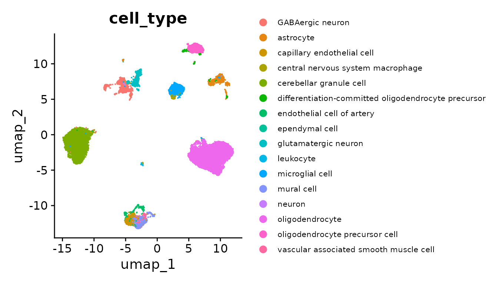

Access CELLxGENE collaboration embeddings (scVI, Geneformer)
Source:vignettes/census_access_maintained_embeddings.Rmd
census_access_maintained_embeddings.RmdThis notebook demonstrates basic access to CELLxGENE collaboration embeddings of CELLxGENE Discover Census. Currently, embeddings from scVI and a fine-tuned Geneformer model are maintained by CELLxGENE Discover. There are other CELLxGENE-hosted embeddings contributed by the community to CELLxGENE Discover, find out more about these in the Census model page.
Contents
Querying cells and loading embeddings as:
- Seurat reductions
- Bioconductor SingleCellExperiment reductions
- sparseMatrix
Open Census
library("cellxgene.census")
census <- open_soma(census_version = "2023-12-15")Load embeddings as Seurat reductions
The high-level cellxgene.census::get_seurat() function can both query the Census and load embeddings into dimensional reductions of the Seurat object.
Here we will ask for a Seurat object with the expression data for all human cells of tissue_general equal to 'central nervous system', along with the scVI and geneformer embeddings (obsm_layers).
library("Seurat")
seurat_obj <- get_seurat(
census,
organism = "homo_sapiens",
obs_value_filter = "tissue_general == 'central nervous system'",
obs_column_names = c("cell_type"),
obsm_layers = c("scvi", "geneformer")
)With the embeddings stored as dimensional reductions on seurat_obj, we can take a quick look at the scVI embeddings in a 2D scatter plot via UMAP, colored by the Census cell_type annotations.
seurat_obj <- RunUMAP(
seurat_obj,
reduction = "scvi",
dims = 1:ncol(Embeddings(seurat_obj, "scvi"))
)
DimPlot(seurat_obj, reduction = "umap", group.by = "cell_type") +
theme(legend.text = element_text(size = 8))
Load embeddings as SingleCellExperiment reductions
Similarly, cellxgene.census::get_single_cell_experiment() can query the Census and store embeddings as dimensionality reduction results on a Bioconductor SingleCellExperiment object.
library("SingleCellExperiment")
sce_obj <- get_single_cell_experiment(
census,
organism = "homo_sapiens",
obs_value_filter = "tissue_general == 'central nervous system'",
obs_column_names = c("cell_type"),
obsm_layers = c("scvi", "geneformer")
)Then, we can view a UMAP of the Geneformer embeddings colored by cell_type.
sce_obj <- scater::runUMAP(sce_obj, dimred = "geneformer")
scater::plotReducedDim(sce_obj, dimred = "UMAP", colour_by = "cell_type")Load embeddings as sparseMatrix
Lastly, we can use a SOMAExperimentAxisQuery for lower-level access to the embeddings’ numerical data. This can be more performant for some use cases that don’t need the other features of Seurat or SingleCellExperiment.
query <- census$get("census_data")$get("homo_sapiens")$axis_query(
"RNA",
obs_query = tiledbsoma::SOMAAxisQuery$new(value_filter = "tissue == 'tongue'")
)
embeddings <- query$to_sparse_matrix("obsm", "geneformer")
str(embeddings)
#> Formal class 'dgTMatrix' [package "Matrix"] with 6 slots
#> ..@ i : int [1:190464] 0 0 0 0 0 0 0 0 0 0 ...
#> ..@ j : int [1:190464] 0 1 2 3 4 5 6 7 8 9 ...
#> ..@ Dim : int [1:2] 372 512
#> ..@ Dimnames:List of 2
#> .. ..$ : chr [1:372] "51784858" "51784859" "51784860" "51784861" ...
#> .. ..$ : chr [1:512] "0" "1" "2" "3" ...
#> ..@ x : num [1:190464] 0.1104 -1.2031 1.0078 0.0131 1.2422 ...
#> ..@ factors : list()Each row of the embeddings sparseMatrix provides the fine-tuned Geneformer model’s 512-dimensional embedding vector for a cell, with the cell soma_joinids in the row names. With different arguments, SOMAExperimentAxisQuery$to_sparse_matrix() can also be read the scVI embeddings or the expression data.
Still lower-level access is available through SOMAExperimentAxisQuery$read(), which streams Arrow tables. And other methods on SOMAExperimentAxisQuery can fetch metadata like cell_type:
head(as.data.frame(query$obs(column_names = c("soma_joinid", "cell_type"))$concat()))
#> soma_joinid cell_type
#> 1 51784858 basal cell
#> 2 51784859 basal cell
#> 3 51784860 fibroblast
#> 4 51784861 fibroblast
#> 5 51784862 basal cell
#> 6 51784863 basal cellThe SOMAExperimentAxisQuery loads only what you ask for from the Census, unlike the high-level get_seurat() and get_single_cell_experiment() functions, which eagerly populate those objects based on your query.
census$close()